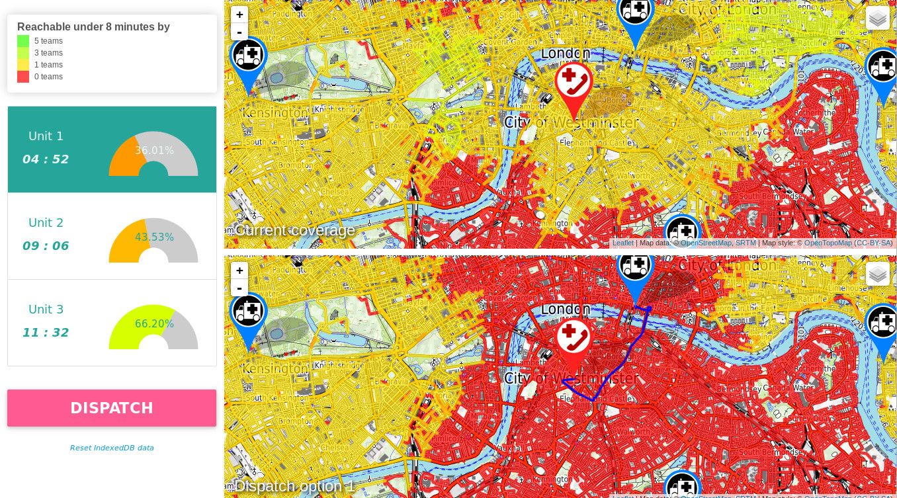
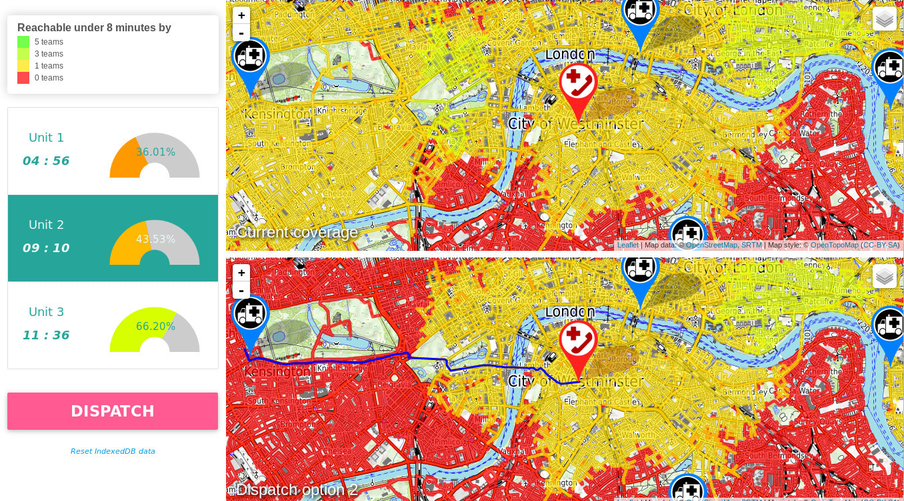
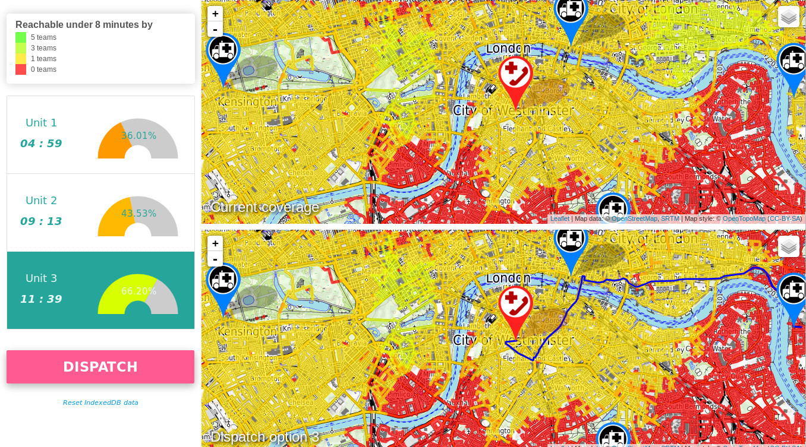

Getting a clear picture on the front line
Towards an optimal dispatch decision
Benjamin Berhault
Getting a clear picture on the front line
Towards an optimal dispatch decision
Benjamin Berhault
Effectiveness of an emergency service
Good decision at the right time
Effectiveness of an emergency service
The optimal team for a rescue request
- Nature of the emergency
- Location of the request
- Estimated time of transportation of the team
-
Immediate response
How long will it take for a first team to reach a location?
-
-
Response capacity
How many teams can be on site within a given timeframe?



Questions ?
benjamin.berhault@hotmail.com